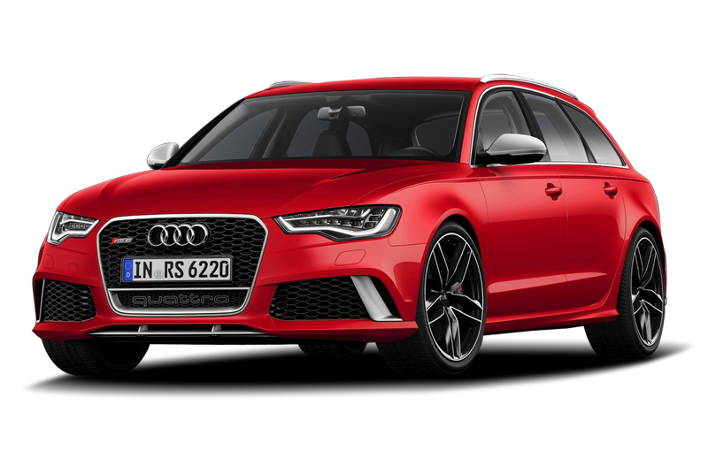

Audi RS6 Avant(C7) выпускается с 2013 года в кузове универсал. В 2015 году был произведён рестайлинг, в ходе которого изменилась
передняя и задняя оптика и внутреннее оснащение. Автомобиль оснащается 4.0-литровой V-образной восьмёркой с двумя
турбинами мощностью 560 или 605 (версия performance) лошадинных сил. Отличаются эти две версии только прошивкой двигателя, поэтому
обычную версию можно перепошить либо под performance на 605 лошадинных сил, либо на Stage 1 примерно на 700 лошадинных
сил. В Stage 2 входит полный выхлоп Miltek или Akrapovićh с резонатором или без, даунпайпы без катализаторов,
прошивка на Stage 2, апгрейд топливных насосов и ТНВД, и, по желанию ставится дополнительный радиатор охлаждения.
Выхлопная система Miltek стоит около 200-300 тысяч рублей, Akrapovićh же около 400 тысяч рублей. Также на данный
момент существует так называемый Stage 2+, в который входит прошивка под Stage 2+, выхлопная система Miltek /
Akrapovich, апгрейд топлливных насосов и ТНВД, а также высокопроизводительная система охлаждения воздуха на впуске
от K8 Strasse. На данный момент для этого автомобиля разрабатывается Stage 3 с мощностью около 1000 л.с. Даже
в стоке у Audi RS6 есть проблемы с охлаждением впускного воздуха, так как в стоке стоит только один жидкостный
кулер. Проще говоря температура двигателя за 2-3 заезда перескакивает за 100 градусов, ухудшаются результаты
разгона 0-100, 100-200 и время заезда на 402 метра. На Audi RS6 ставится коробка передач ZF, которая выдерживает
до 1400 Н·м крутящего момента, поэтому при тюнинге никаких доработок коробки передач не требуется. Также
реализован "честный" полный привод с дифференциалом Torsen.
|
|
Audi RS6
|
Audi RS6 performance
|
Audi RS6 Stage 1
|
Audi RS6 Stage 2
|
Audi RS6 Stage 2+
|
|
Тип двигателя
|
4.0 TFSI
|
|
Объем двигателя
|
3993 см
3
|
|
Максимальная мощность, л.с. при об/мин
|
560 / 5700-6600 (575-590)
|
605 / 6100-6800 (630-645)
|
700-720
|
740-755 (770-785)
|
800-815 (820-830)
|
|
Максимальный крутящий момент, Н·м при об/мин
|
700 / 1750-5500 (740-750)
|
700 / 1750-6000 (750-760)
|
1000-1050
|
1100-1130 (1150-1170)
|
1130-1140 (1150-1170)
|